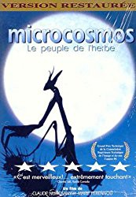

#8486 Mikrokosmos - Das Volk der Gräser
Alternativ: Microcosmos (Englischer Titel)
 
 IMDB-Wertung: 7.9 / 10
IMDB-Wertung: 7.9 / 10  Metascore: 0
Metascore: 0 
A documentary of insect life in meadows and ponds, using incredible close-ups, slow motion, and time-lapse photography. It includes bees collecting nectar, ladybugs eating mites, snails mating, spiders wrapping their catch, a scarab beetle relentlessly pushing its ball of dung uphill, endless lines of caterpillars, an underwater spider creating an air bubble to live in, and a mosquito hatching.
Jahr: 1996
Dauer: 75 Minuten
FSK: 0
Land: Frankreich Studio: StudioCanalTonspuren:
Untertitel: Deutsch,
Auflösung: 1080p (1808x1080) Größe: 8755 MB
Genre: Dokumentation
Regisseur: Claude Nuridsany, Marie Pérennou
Drehbuch: Claude Nuridsany
Soundtrack: Bruno Coulais
Darsteller:
- Jacques Perrin als Récitant / Narrator (French version)
 Kristin Scott Thomas als Narrator (English version)
Kristin Scott Thomas als Narrator (English version)
Datei: X:\Dokumentationen\Tiere\Mikrokosmos - Das Volk der Gräser (1996, FSK0, 1808x1080).mkv seit 07.03.2018
Festplatte: HD Serien(SU-Z)+Dokus+Musik
 Es gibt insgesamt 37 Filme in der Gruppe 'Dokumentationen\Tiere'
Es gibt insgesamt 37 Filme in der Gruppe 'Dokumentationen\Tiere'